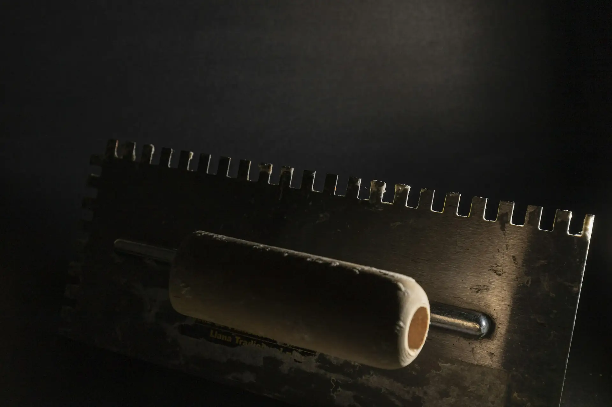

Artisan peintre
à Chambéry.
Cinquante minutes depuis l’atelier par la vallée du Grésivaudan. Assez près pour suivre un chantier de près.
Le vieux Chambéry
et le reste.
- Métiers
- Rénovation intérieure et peinture
- Secteur
- Chambéry · Savoie (73)
- Atelier
- Gières (38), à environ 55 km
- Artisan
- David, Compagnon du Devoir
Dans le centre ancien, autour de la place Saint-Léger, les murs sont épais et pas toujours d’équerre. On ne cherche pas à les rendre parfaitement plats à tout prix : on les rend sains, propres, et on choisit une finition qui leur va.
Dans les maisons et résidences plus récentes de l’agglomération, c’est souvent l’inverse : des cloisons en plaque à reprendre aux joints, des peintures d’origine fatiguées, des boiseries à relaquer.
Dans les deux cas, la méthode reste la même. Diagnostic, préparation, puis seulement la couleur.
Chambéry
et alentours.
Albertville et la Combe de Savoie sont aussi possibles selon le chantier.
Quelques demandes
récurrentes.
Remettre à neuf les murs d’une maison
Ratissage, reprise des fissures, peinture des pièces une par une si vous restez dans les lieux.
Un appartement du centre ancien
Murs irréguliers, vieux plâtres : on adapte les produits au support.
Les boiseries et volets intérieurs
Ponçage, sous-couche et laque, pour un rendu net et durable.
Questions
pratiques.
Chambéry, c’est loin de votre atelier ?
Une cinquantaine de kilomètres. C’est une zone où l’on intervient régulièrement.
Vous pouvez travailler pendant qu’on habite la maison ?
Oui, on avance pièce par pièce, avec des protections au sol et sur les meubles. On vous dit à l’avance quelles pièces seront indisponibles et quand.
Les vieux murs, ça se peint ?
Oui, mais pas avec n’importe quoi. Certains supports anciens demandent une peinture qui laisse respirer le mur. On le vérifie à la visite.

Votre projet en Savoie ?
Commencez par l’estimation en ligne, on cale ensuite la visite.